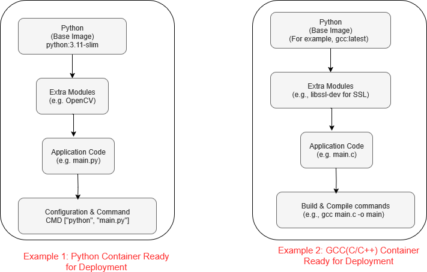

Hello Docker
Writing a Python Application
In this section, we build a simple Docker application that displays a message 100 times on the screen with a delay of one second.
While it's not a very useful app, it serves to demonstrate the basic concept clearly.
1. Directory structure
We create a folder structure like this:
(a minimum docker application has two files. i)applicaiton code, and ii) Docker file)
hello-python-docker/
├── Dockerfile #docker configuration file
├── hello_world.py #contains application code
└── requirements.txt #(optional) file to install extra modules which are not part of base package
Create he directory and files (empty) as shown below:
mkdir hello_python_docker #create a folder
cd hello_python_docker #python file that prints a message
touch hello_world.py
touch Dockerfile #docker build instructions
touch requirements.txt # (optional) dependencies such as required python modules
2. File contents
A Docker container must include the application code, which is its fundamental purpose. In addition to the code, it can also contain build tools, runtime environments, and configuration files — these will be explained in the next section.
Below is an example of the application code that we are using in this example.
Essential item 1: Application code
hello_world.py
import time
for i in range(1, 101):
print(f"hello world - from a docker app-{i}")
time.sleep(1) # wait for 1 second
Essential item 2: Dockerfile
A Dockerfile is a script that defines how to build a Docker image. It specifies the following:
i) the base image
ii) the application code
iii) required dependencies
iv) configuration needed to run the application
In the simple example below, we are covering only the first two items: (the base image and the application)
Dockerfile
# Use official Python base image
FROM python:3.11-slim
# Set working directory
WORKDIR .
# Copy source code
COPY hello_world.py .
COPY requirements.txt ./
# Install dependencies (if any)
RUN pip install --no-cache-dir -r requirements.txt
# Run the app
CMD ["python", "./hello_world.py"]
Brief Description of Dockerfile Instructions:
FROM python:3.11-slim
Sets the base image for the container. Your application code and other configurations will be layered on top of this.
COPY main.py .
Copies the main.py file from your local directory into the Docker image.
Note: If your app includes more files or folders, you need to copy those too.
WORKDIR .
Sets the working directory inside the container — this is where commands will run from.
RUN pip install --no-cache-dir -r requirements.txt
Installs the Python dependencies listed in requirements.txt using pip.
CMD ["python", "./hello_world.py"]
Defines the default command that runs when the container starts — in this case, it runs the Python script.
3. Base image (the starting container)
The base image is the foundational container used to host an application. Additional elements, such as modules and dependencies, are added as needed, along with any necessary configuration settings.

In this example, we are using a Python image as the base image to provide the runtime environment for our application.
4. Build and run
-
Change directory Make sure that you are in the folder "hello_python_docker"
-
Build the docker (container)
The resulting Docker image is saved locally on your system — not as a file but inside Docker’s internal storage. Output is: -
Run the docker (the flag -it is important here... more on this later)
Output:
5. Migrate to another machine
Once docker image is ready, you can export it to a file, so that it can be trasferred to any machine where it can be executed.
Run into another machine
- Create a docker image file (see the above section "exporting the docker image")
- Transfer to another machine (via network, usb, etc.)
- load the image into the target machine
-
verify that the image is properly imported.
-
Run the docker application.
6. Run multiple instances
As mentioned earlier, that a docker is an indepdent container.
Once created, a docker can run many instances. Following instructions show how to run a docker multiple (twice) in the same machine.
Open Terminal 1
Open Terminal 2
Both will be running the same program and each will be displaying their own message count.